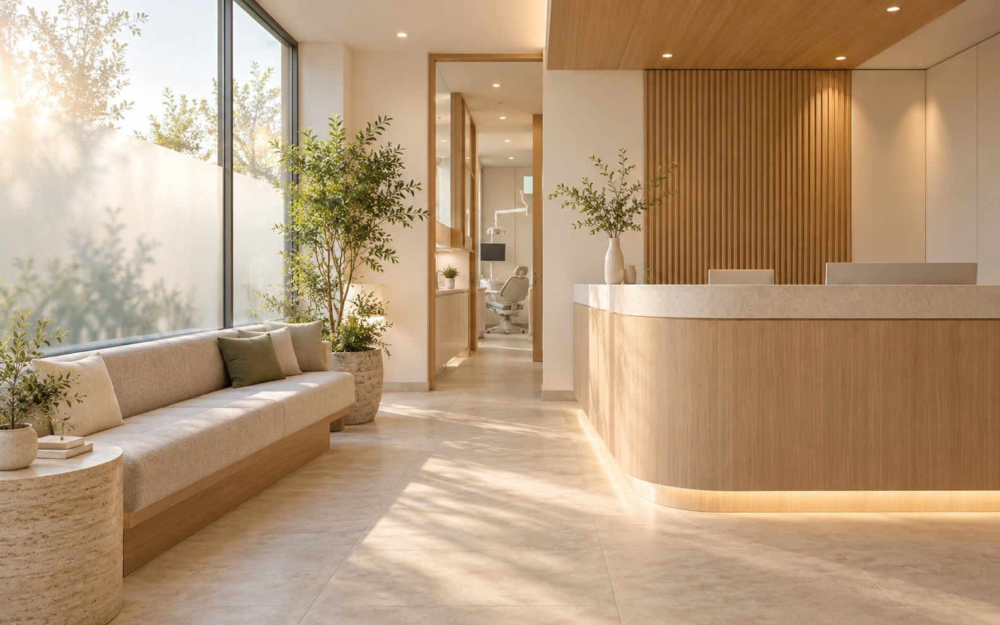

Забота о вашей улыбке начинается с внимательного разговора.
Спокойно обсудим ваши вопросы и вместе найдём подходящий путь.

Забота о вашей улыбке
Внимательное отношение, спокойные объяснения и бережный подход на каждом этапе.
- Образование
- Стаж
- Квалификация
Направления помощи
Мы бережно относимся к каждому этапу лечения и помогаем выбрать подходящее решение.
- Консультация стоматологаПервичный приём
- Профессиональная гигиенаПрофилактика
- Лечение зубовТерапевтическая помощь
- ПротезированиеОртопедическая помощь
Как проходит приём
- Запись
- Консультация
- Диагностика
- Составление плана лечения
- Лечение
- Рекомендации после приёма
Запись на приём
Позаботимся, чтобы знакомство с клиникой прошло спокойно и понятно.
Информация
об организации
Перейти на страницу
Частые вопросы
Коротко о том, что поможет чувствовать себя увереннее.
Что взять с собой на консультацию?
Если у вас есть предыдущие снимки или выписки, возьмите их с собой — это поможет врачу лучше понять контекст.
Можно ли обсудить план до начала лечения?
Конечно. Попросите врача рассказать о возможных вариантах, этапах и ответить на ваши вопросы до принятия решения.
Как подготовиться к визиту?
Заранее запишите вопросы, которые хотите обсудить. Если что-то беспокоит или вызывает тревогу, скажите об этом специалисту.
Как узнать стоимость лечения?
Попросите врача объяснить план и стоимость до начала процедур — так вы сможете спокойно оценить предложенные варианты.